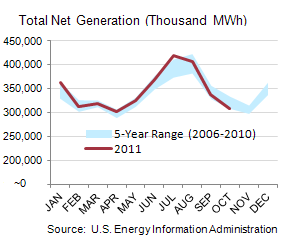
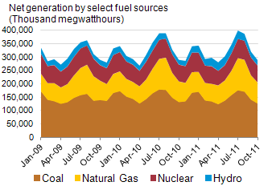
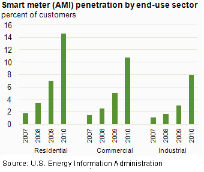
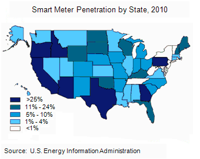
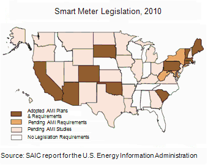

Electricity
Electricity Monthly Update
With Data for October 2011 | Release Date: Dec. 21, 2011 | Next Release Date: Jan. 30, 2012 |
Re-Release Date: November 28, 2012 (correction)
Previous Issues
Highlights: October 2011
- Mixed temperatures led to flat retail sales of electricity during October 2011.
- Coal-fired generation decreased or was flat across the United States except for the Central region when compared to October 2010.
- October's electric system load remained in the mid-to-low section of the annual range in many electric systems across the United States.
Key Indicators
| Oct. 2011 | % Change from Oct. 2010 | |
|---|---|---|
| Total Net Generation (Thousand MWh) |
309,400 | 0.5% |
| Residential Retail Price (cents/kWh) |
12.12 | 2.2% |
| Retail Sales (Thousand MWh) |
285,156 | -0.9% |
| Heating Degree-Days | 259 | 8.8% |
| Natural Gas Price, Henry Hub ($/MMBtu) |
3.68 | 4.0% |
| Coal Stocks (Thousand Tons) |
156,880 | -10.7% |
| Coal Consumption (Thousand Tons) |
69,627 | -1.8% |
| Natural Gas Consumption (Mcf) |
603,724 | 1.6% |
| Nuclear Outages (MW) |
17,851 | -0.5% |


State Policies Drive Growth in Smart Meter Use
Plans and requirements for installation of smart meters adopted in eleven states appear to be paying off in significant increases in meter penetration rates. These meters, known as AMI or Advanced Metering Infrastructure, use two-way communication to connect utilities and consumers and support demand response and distributed generation. The numbers reported to EIA for 2010 show a significant uptick in the number of meters using two-way communications.
AMI technology can provide usage data to both the utility and the consumer. This capability, when combined with real-time prices, time-of-day, or other pricing options, gives consumers the information they need to alter their usage and, in some cases, lower their bills. Customers who can manage their energy use can save money and conserve energy, which, collectively, can contribute to reduced need for additional power plants (and the significant capital costs associated with new generating capacity).
Smart meter penetration rates vary significantly by state (see the first map below). While the 2010 national average penetration rate was about 14 percent, rates in 7 states exceeded 25 percent and another 6 states had rates above the national average. No smart meters were reported in use in eight states.
It is interesting to compare these state-by-state penetration rates with the results of a recent Smart Grid study conducted by the consulting firm Science Applications International Corporation for EIA. The study provides a summary, by state, of adopted or pending legal and regulatory policies related to the smart grid. The report provides 23 case studies of smart grid pilots and programs in the United States including both "successful or progressing projects," and "cancelled or postponed projects." The report also presents research on international smart grid projects.
AMI legislations and policies have been adopted or are under consideration in most states (see the second map below). The map shows that eleven states have adopted smart meter plans and requirements. AMI requirements are pending three more states. All but eleven of the remaining states are studying smart meter policies.
The two maps show that 6 states that have adopted AMI plans and requirements have penetration rates greater than 10percent. Use of smart meters does not always require government action. Some states with no smart grid policies still have some significant AMI penetration, such as in Idaho, Wisconsin and Florida.

End Use: October 2011
Retail Rates/Prices and Consumption
In this section, we look at what electricity costs and how much is purchased. Charges for retail electric service are based primarily on rates approved by state regulators. However, a number of states have allowed retail marketers to compete to serve customers and these competitive retail suppliers offer electricity at a market-based price.
EIA does not directly collect retail electricity rates or prices. However, using data collected on retail sales revenues and volumes, we calculate average retail revenues per kWh as a proxy for retail rates and prices. Retail sales volumes are presented as a proxy for end-use electricity consumption.
Average Revenue per kWh by State
The average cost of electricity rose in much of the country, except for many states in the Northeast. The largest increase in revenue per kilowatthour occurred in Hawaii, where oil is the predominant fuel for electricity generation and where the cost of oil rose over 41 percent in the last year. The largest decline was seen in Rhode Island, which dropped 14 percent between October 2010 and October 2011.
The cost of electricity increased in nearly every customer class, with the residential and industrial sectors exhibiting the largest increases in average revenue per kilowatthour, up 2.2 and 2.1 percent, respectively. The average cost of electricity in the residential sector in October was 12.12 cents per kilowatthour. While the cost of electricity was up across all sectors, actual sales of electricity fell in all sectors except the industrial sector, which saw a slight increase in sales of 0.9 percent over the last year. The industrial sector often follows a distinct trend from the residential and commercial sectors, as space heating and cooling contributes a smaller percentage of total energy use for this sector.
Retail Sales
Since October is considered a "shoulder period" where heating and cooling are not as heavily used, weather doesn't correlate as strongly to electricity sales as during the winter or summer months.
There does still appear to be some weather-driven behavior in the Southeast, where it was cooler than last year and much cooler than the average over the last 30 years. Unseasonably low temperatures at this time of the year and in this region, where air conditioning can continue to play an important role as late as October, may have helped reduce the overall demand as less space cooling was required this month.
Resource Use: October 2011
Supply and Fuel Consumption
In this section, we look at what resources are used to produce electricity. Electricity supplied from the grid is consumed the moment it is produced. Generating units are chosen to run primarily on their operating costs, of which fuel costs account for the lion's share. Therefore, we present below electricity generation output by generator type and fuel type. Since the generator/fuel mix of utilities varies significantly by region, we also present generation output by region.
Generation Output by Region
Consistent with the retail sales numbers, generation output rose in Texas, as well as the Central and Mid-Atlantic regions and declined or remained flat in other regions. Generation output from fossil fuel powered steam turbines decreased significantly in the Southeast, and was replaced by natural gas combined-cycle and nuclear output. Texas met the increased demand for electricity with greater use of natural gas combined-cycle and wind units.
Coal-fired generation decreased in the Southeast, Florida, the Mid-Atlantic, and the Northeast in October when compared to the same month in 2010. Natural gas generation increased in each of the above regions, with the most pronounced increase in the Southeast. In the Central region, where coal is the marginal fuel, natural gas generation declined slightly. In the West, where total generation fell slightly, natural gas declined in favor of nuclear, hydroelectric and other renewable sources.
Fossil Fuel Consumption by Region
The chart above shows that consumption of coal rose in the Central region, with slight increases in Texas and the West. Bituminous coal consumption dropped significantly in the Southeast, contributing to the large drop in coal consumption in that region and consistent with fuel price increases in the spot market for Central Appalachian coal.
The second tab compares natural gas consumption in October 2010 and October 2011 by region. The largest increase at a regional level of any fossil fuel during this time period was seen in natural gas consumption in the Southeast. This came at the expense of coal consumption in that region. Natural gas consumption increased due to increased demand in Texas and the Mid-Atlantic. A small increase in natural gas consumption was seen in Florida, mostly due to slight decreases in coal consumption. Natural gas consumption dropped significantly in the West, due to reduced electricity sales in California and Oregon and flat sales in Nevada.
The third tab presents the change in the relative share of fossil fuel consumption on a percentage basis calculated using equivalent energy content (Btu). This highlights changes in relative consumption of coal, natural gas, and petroluem. The Southeast and Northeast regions had a significant drop in coal consumption which was replaced by natural gas. This trend also was seen in the Mid-Atlantic and Texas, though on a smaller scale.
The fourth tab presents the change in the relative share of fossil fuel (coal and natural gas) consumption on an energy content (Trillion Btu) basis from October 2010 and October 2011 by region. This highlights changes in total fossil fuel use. The consumption of coal declined in every region except the West and Central United States. Coal consumption in the West coincided with increased electricity sales in states with high levels of coal capacity for that region and decreases in sales in natural gas-dependent states. Natural gas consumption increased significantly in the Southeast, Northeast, Texas and the Mid-Atlantic.
Fossil Fuel Prices
To gain some insight into the changing pattern of consumption of fossil fuels between October 2010 and October 2011, we look at relative monthly average fuel prices. A common way to compare fuel prices is on an equivalent $/MMBtu basis as shown in the chart above. All fuel prices increased. However, the most pronounced change is the price of residual oil—a 44 percent increase. Central Appalachian coal rose 15 percent between October 2010 and October 2011 and is approaching the monthly average spot price for natural gas at Henry Hub.
But a fuel price comparison based on equivalent energy content ($/MMBtu) does not reflect differences in energy conversion efficiency (heat rate) among different types of generators. Gas-fired combined-cycle units tend to be more efficient than coal-fired steam units. The second tab shows coal and natural gas prices on an equivalent energy content and efficiency basis. This comparison shows that the average October 2011 price in $/MWh for Central Appalachian coal exceeded the price of natural gas at Henry Hub and at Transco Zone 6 New York.
The conversion shown in this chart is done for illustrative purposes only. The competition between coal and natural gas to produce electricity is more complex. It involves delivered prices and emission costs, the terms of fuel supply contracts and the workings of fuel markets.
Regional Wholesale Markets: October 2011
The United States has many regional wholesale electricity markets. Below we look at monthly and annual ranges of on-peak, daily wholesale prices at selected pricing locations and daily peak demand for selected electricity systems in the U.S. The range of daily prices and demand data is shown for the report month and for the year ending with the report month.
Prices and demand are shown for six Regional Transmission Operator (RTO) markets: ISO New England (ISO-NE), New York ISO (NYISO), PJM Interconnection (PJM), Midwest ISO (MISO), Electric Reliability Council of Texas (ERCOT), and two locations in the California ISO (CAISO). Also shown are wholesale prices at trading hubs in Louisiana (into Entergy), Southwest (Palo Verde) and Northwest (Mid-Columbia). In addition to the RTO systems, peak demand is also shown for the Southern Company, Progress Florida, Tucson Electric, and the Bonneville Power Authority (BPA). Refer to the map tabs for the locations of the electricity and natural gas pricing hubs and the electric systems for which peak demand ranges are shown.
In the second tab immediately below, we show monthly and annual ranges of on-peak, daily wholesale natural gas prices at selected pricing locations in the U.S. The range of daily natural gas prices is shown for the same month and year as the electricity price range chart. Wholesale electricity prices are closely tied to wholesale natural gas prices in all but the center of the country. Therefore, one can often explain current wholesale electricity prices by looking at what is happening with natural gas prices.
Wholesale Electricity Prices

{kind=link}
{kind=link}
Wholesale electricity spot prices for October 2011 were at the low end of the yearly range in every location shown except for the Northwest. Mild fall temperatures kept electricity demand low (see peak demand chart below). Prices were lower earlier in the year in the Northwest due to low-cost hydroelectric production. October prices stayed within a fairly narrow range. The range in prices in the Northeast, Texas and the West was primarily due to a few days of warmer weather in the middle of the month.
Wholesale natural gas spot prices for October 2011 set the low end of the yearly range in every location shown except for Louisiana (Henry Hub). Mild fall temperatures and plentiful production kept natural gas demand low. October prices stayed within a very narrow range between $3/MMBtu and $4/MMBtu. The only location with a wider monthly range was the Northeast. This was due to a run up in prices to almost $5/MMBtu in the last week of the month.
Electricity System Daily Peak Demand
Daily peak-hour demands for October 2011 were at the low end of the yearly range in every system shown. Mild fall temperatures kept electricity demand low. Peak demand hit yearly lows in the New England, Progress Florida and Texas (ERCOT) systems in October. Systems with larger monthly ranges tended to be in warmer climates. Most of the variability in daily peak demand comes from higher peaks during the work week and lower peaks on weekends.
Electric Power Sector Coal Stocks: September 2011
Electric power sector coal stocks continued to replenish after the summer burn in October, though stockpile levels remain well below 2010 levels. All coal stockpile levels declined from October 2010, with bituminous coal stockpile levels 12 percent lower than the same month of 2010.
Days of Burn
The average number of days of burn held at electric power plants is a forward looking estimate of coal supply given a power plant's current stockpile and past consumption patterns. The average number of days of burn held on hand at electric power plants was generally flat in October 2011 compared to September of this year. The summer of 2011 saw significant declines in total U.S. stockpile levels, which were replenished in the early fall. Coal consumption patterns for the November, December, and January are typically below the summer level. Though national stockpile levels at power plants included in the days of burn sample are above the levels from last month, the declining consumption pattern of the next three months kept the supply of coal flat.
Coal Stocks and Average Number of Days of Burn for Non-Lignite Coal by Region (Electric Power Sector)
| Oct 2011 | Oct 2010 | Sept 2011 | ||||||||
|---|---|---|---|---|---|---|---|---|---|---|
| Zone | Coal | Stocks (1000 tons) | Days of Burn | Stocks (1000 tons) | Days of Burn | % Change of Stocks | Stocks (1000 tons) | Days of Burn | % Change of Stocks | |
| Northeast | Bituminous | 7,137 | 54 | 7,749 | 59 | -7.9% | 6,043 | 51 | 18.1% | |
| Subbituminous | 551 | 38 | 781 | 48 | -29.4% | 585 | 40 | -5.7% | ||
| South | Bituminous | 41,118 | 71 | 45,526 | 73 | -9.7% | 36,035 | 70 | 14.1% | |
| Subbituminous | 4,902 | 50 | 5,633 | 59 | -13.0% | 3,923 | 43 | 25.0% | ||
| Midwest | Bituminous | 14,338 | 57 | 19,531 | 73 | -26.6% | 13,444 | 59 | 6.7% | |
| Subbituminous | 40.114 | 58 | 43,874 | 64 | -8.6% | 37,762 | 59 | 6.2% | ||
| West | Bituminous | 7,845 | 121 | 6,979 | 100 | 12.4% | 7,587 | 120 | 3.4% | |
| Subbituminous | 25,220 | 59 | 28,061 | 66 | -10.1% | 24,043 | 61 | 4.9% | ||
| U.S. Total | Bituminous | 70,438 | 68 | 79,785 | 73 | -11.7% | 63,109 | 68 | 11.6% | |
| Subbituminous | 70,788 | 58 | 78,349 | 64 | -9.7% | 66,313 | 58 | 6.7% | ||
Source: U.S. Energy Information Administration
NOTE: Stockpile levels shown above reflect a sample of electric power sector plants, which were used to create the days of burn statistics. These levels will not equal total electric power sector stockpile levels
Methodology and Documentation
General
The Electricity Monthly Update is prepared by the Electric Power Operations Team, Office of Electricity, Renewables and Uranium Statistics, U.S. Energy Information Administration (EIA), U.S. Department of Energy. Data published in the Electricity Monthly Update are compiled from the following sources: U.S. Energy Information Administration, Form EIA-826,“Monthly Electric Utility Sales and Revenues with State Distributions Report,” U.S. Energy Information Administration, Form EIA-923, "Power Plant Operations Report," fuel spot prices from Bloomberg Energy, electric power prices from SNL Energy, electric system demand data from Ventyx Energy Velocity Suite, and weather data and imagery from the National Oceanic and Atmospheric Administration.
The survey data are collected monthly using multiple-attribute cutoff sampling of power plants and electric retailers for the purpose of estimation for various data elements (generation, stocks, revenue, etc.), for various categories, such as geographic regions. (The data elements and categories are “attributes.”) The nominal sample sizes are: for the Form EIA-826, approximately 450 electric utilities and other energy service providers; for the Form EIA-923, approximately 1900 plants. Regression-based (i.e., “prediction”) methodologies are used to estimate totals from the sample. Essentially complete samples are collected for the Electric Power Monthly (EPM), which includes State-level values. The Electricity Monthly Update is based on an incomplete sample and includes only regional estimates and ranges for state values where applicable. Using ‘prediction,’ it is generally possible to make estimates based on the incomplete EPM sample, and still estimate variances.
For complete documentation on EIA monthly electric data collection and estimation, see the Technical Notes to the Electric Power Monthly. Values displayed in the Electric Monthly Update may differ from values published in the Electric Power Monthly due to the additional data collection and data revisions that may occur between the releases of these two publications.
Accessing the data: The data included in most graphics can be downloaded via the "Download the data" icon above the navigation pane.Some missing data is proprietary and non-public.
Key Indicators
The Key Indicators table, located in the "Highlights" section, are defined below. The current month column includes data for the current month at a national level. The units vary by statistic, but are included in the table. The "% Change from 2010" value is the current month divided by the corresponding month last year (e.g. July 2011 divided by July 2010). This is true for Total Generation, Residential Retail Price, Retail Sales, Cooling Degree Days, Coal Stocks, Coal and Natural Gas Consumption. The Henry Hub current month value is the average weekday price for the current month. The Henry Hub "% Change from 2010" value is the average weekday price of the same month from 2010 divided by the average weekday price of the current month.
Total Net Generation: Reflects the total electric net generation for all reporting sectors as collected via the Form EIA-923.
Residential Retail Price: Reflects the average retail price as collected via the Form EIA-826.
Retail Sales: Reflects the reported volume of electricity delivered as collected via the Form EIA-826.
Cooling Degree Days: Reflects the total population weighted U.S. degree days as reported by the National Oceanic and Atmospheric Administration.
Natural Gas Henry Hub: Reflects the average price of natural gas at Henry Hub for the month. This data is provided by Bloomberg.
Coal Stocks: Reflects the total coal stocks for the Electric Power Sector as collected via the Form EIA-923.
Coal Consumption: Reflects the total coal consumption as collected via the Form EIA-923.
Natural Gas Consumption: Reflects the total natural gas consumption as collected via the Form EIA-923.
Nuclear Outages: Reflects the average daily outage amount for the month as reported by the Nuclear Regulatory Commission's Power Reactor Status Report.
Sector Definitions
The Electric Power Sector comprises electricity-only and combined heat and power (CHP) plants within the North American Industrial Classification System 22 category whose primary business is to sell electricity, or electricity and heat, to the public (i.e., electric utility plants and Independent Power Producers (IPP), including IPP plants that operate as CHP). The All Sectors totals include the Electric Power Sector and the Commercial and Industrial sectors (Commercial and Industrial power producers are primarily CHP plants).
Degree Days
Degree-days are relative measurements of outdoor air temperature used as an index for heating and cooling energy requirements. Heating degree-days are the number of degrees that the daily average temperature falls below 65° F. Cooling degree-days are the number of degrees that the daily average temperature rises above 65° F. The daily average temperature is the mean of the maximum and minimum temperatures in a 24-hour period. For example, a weather station recording an average daily temperature of 40° F would report 25 heating degree-days for that day (and 0 cooling degree-days). If a weather station recorded an average daily temperature of 78° F, cooling degree-days for that station would be 13 (and 0 heating degree days).
Composition of Fuel Categories
Net generation statistics are grouped according to regions (see Electricity Monthly Update Explained Section) by generator type and fuel type. Generator type categories include:
Fossil Steam: Steam turbines powered by the combustion of fossil fuels
Combined Cycle: Combined cycle generation powered by natural gas, petroluem, landfill gas, or other miscellaneous energy sources
Other Fossil: Simple cycle gas turbines, internal combusion turbines and other fossil powered technology
Nuclear Steam: Steam turbines at operating nuclear power plants
Hydroelectric: Conventional hydroelectric turbines
Wind: Wind turbines
Other renewables: All other generation from renewable sources such as geothermal, solar, or biomass
Other: Any other generation technology, including hydroelectric pumped storage
Generation statistics are also displayed by fuel type. These include:
Coal: all generation associated with the consumption of coal
Natural Gas: all generation associated with the consumption of natural gas
Nuclear: all generation associated with nuclear power plants
Hydroelectric: all generation associated with conventional hydroelectric turbines
Other Renewable: all generation associated with wind, solar, biomass, and geothermal energy sources
Other Fossil: all generation associated with petroleum products and fossil-dervied fuels
Other: all other energy sources including waste heat, hydroelectric pumped storage, other reported sources
Relative Fossil Fuel Prices
Relative fossil fuel prices are daily averages of fossil fuel prices by month, displayed in dollars per million British thermal unit as well as adjusted for operating efficiency at electric power plants to convert to dollars per megawatthour. Average national heat rates for typical operating units for 2010 were used to convert relative fossil fuel prices.
Average Days of Burn
Average Days of Burn is defined as the average number of days remaining until coal stocks reach zero if no further deliveries of coal are made. These data have been calculated using only the population of coal plants present in the monthly Form EIA-923. This includes 1) coal plants that have generators with a primary fuel of bituminous coal (including anthracite) or subbituminous, and 2) are in the Electric Power Sector (as defined in the above "Sector definitions"). Excluded are plants with primary fuel of lignite and waste coal, mine mouth plants, and out of service plants. Coal storage terminals and the related plants that they serve are aggregated into one entity for the calculation of Average Days of Burn, as are plants that share stockpiles.
Average days of burn is computed as follows: End of month stocks for the current (data) month, divided by the average burn per day. Average burn per day is the average of the three previous years’ consumption as reported on the Form EIA-923.
For lists of the plants included in the calculations, the plants that are excluded, and the plants that are aggregated with terminals, contact EIA at EIA923@eia.gov.
These data are displayed by coal rank and by zone. Each zone has been formed by combining the following Census Divisions:
- "Northeast" — New England, Middle Atlantic
- "South" — South Atlantic, East South Central
- "Midwest" — West North Central, East North Central
- "West" — Mountain, West South Central, Pacific Contiguous
Coal Stocks vs. Days of Burn Stocks
The coal stocks data presented at the top of the Fossil Fuel Stocks section (“Coal Stocks”) will differ from the coal stocks presented in the Days of Burn section (“DOB Stocks”) at the bottom of the Fossil Fuel Stocks section. This occurs because Coal Stocks include the entire population of coal plants that report on both the annual and monthly Form EIA-923. The DOB Stocks only include coal plants that report on the monthly Form EIA-923 and have a primary fuel of bituminous (including anthracite) or subbituminous as reported on the Form EIA-860.